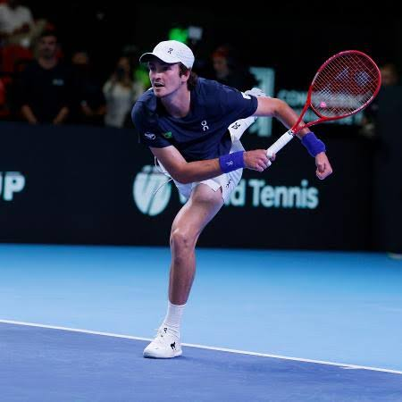

João Fonseca se emociona com apoio do ídolo Guga e revela estar abaixo fisicamente e mentalmente
João Fonseca falou sobre o apoio de Guga após vitória pela Copa Davis e comentou seu momento físico e mental.

João Fonseca conseguiu uma vitória importante pela Copa Davis ao superar o suíço Dominik Stricker. Após a partida, o jovem tenista brasileiro falou sobre o momento que está vivendo dentro e fora das quadras.
Um dos momentos que mais emocionou João foi o apoio recebido de Gustavo Kuerten, o Guga, ídolo histórico do tênis brasileiro. A presença e as palavras de Guga tiveram um significado especial para o jogador.
João também revelou que não está se sentindo 100% fisicamente e mentalmente. O tenista comentou sobre as dificuldades enfrentadas recentemente e reconheceu que ainda precisa recuperar sua melhor condição.
Mesmo passando por esse momento, João Fonseca conseguiu contribuir para a equipe brasileira na Copa Davis e mostrou sua determinação durante a partida.
O apoio de Guga e a vitória podem representar um incentivo importante para João seguir trabalhando e buscar uma recuperação física e mental antes dos próximos desafios da temporada.
Voltar para Esportes